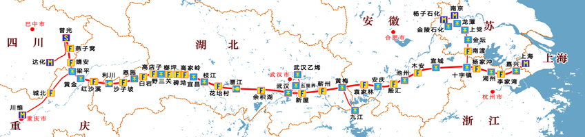
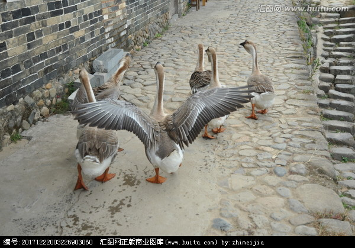
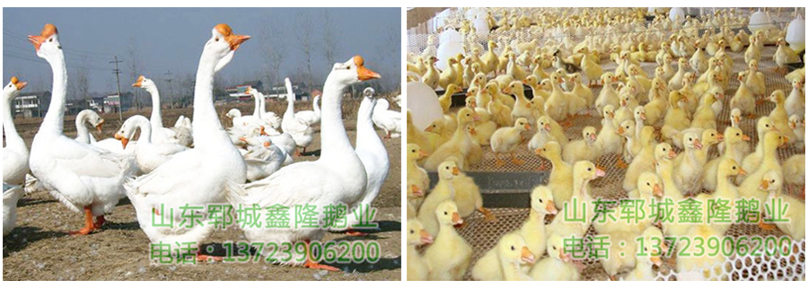
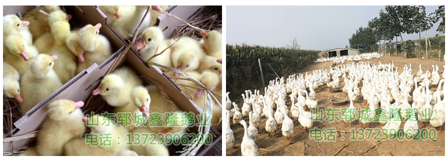

- 


- 
一、产业特点
1、耐粗饲，节约粮食
我国人多地少，利用鹅的特性发展耗粮少的养鹅业，无疑是畜牧业今后的一项重要发展途径，也是社会发展的需要，切合实际的选择。
鹅属于节粮型家禽，具有强健的肌胃和比身体长十倍的消化道及发达的盲肠，此特点在放牧条件好的地方，肉用于仔鹅达到上市体重时没增重1千克，好精料仅需0.5千克，用养一头猪的饲料来养鹅，其产肉量是猪的三倍。
2、生产块，饲养周期短
实践知，鹅从初生重到体重加倍的时间需7天，鸭需9天，鸡需13天。鹅4周龄体重可达成年体重的80%，鸡通常可达到60%：此特点缩短了从投入到生产的时间，加快了资金的周转，从而提高了劳动生产率和经济效益。
3、产品用途广
鹅产品主要包括鹅肉、鹅肝及羽绒3大类。鹅肉与猪肉、羊肉比较，脂肪含量较少，肉质细嫩，营养丰富。鹅肉的脂肪含量只有11.2%，而瘦猪肉脂肪含量为28.8%，瘦羊肉的脂肪含量为13.6%;而且鹅肉脂肪中含不饱脂肪酸比猪、牛、羊都高，对人体健康更为有利。
 鹅绒富有弹性，吸水率低，隔热性强，质地柔软，是高级衣、被的填充料。鹅肥肝是一种高热能的食品，也是家禽产品中的高档品，具有质地细嫩、营养丰富、风味独特等优点，成为西方国家食谱中的美味佳肴。
鹅除以上3大产品外，还包括内脏、鹅血、鹅羽毛等副食产品，这些副食产品有的是上等食品，如将鹅盹风干制成“鹅盹干”在国际市场都很走销。有的副产品还具有药用价值。
4、投资少、成本低、见效快
养鹅充分利用当地粗饲料，不需要很多设施设备，只需一些简易棚舍，以供雏鹅雨天及过夜用等。养一只3.5千克重的鹅，其鹅苗和饲料费用30元，按每千克12元计算可获毛利10元左右，由此可见养鹅业具有投入少、效益高等特点。
二、生活特点
1、产蛋季节性强
鹅的产蛋量很低，且季节性很强，南方鹅一般是秋后见蛋且产蛋量只有30枚至40枚左右（四川鹅除外），北方鹅一般在春节前后见蛋，到麦前停产，产蛋量比南方高约70-80枚。
2、合群性
家鹅由野雁驯化而来，雁喜群居和成群结队飞行，家鹅天性喜群居生活，此特征有利于鹅群的管理。
3、耐寒性
鹅的羽绒厚密贴身，具有很好的隔热和保暖作用，耐寒性强，羽毛上涂有尾脂腺分泌的油脂可以防止水的浸湿，实践知鹅在-4℃至-6℃的寒冷地区也能正常繁殖和生长。
4、杂食性
鹅是水禽，水禽比路禽的食性更广，更耐粗饲。水禽的嗅觉、味觉不发达，对饲料要求不高，鹅肌胃发达，能充分吸收植物饲料的营养物质，能大量利用青绿饲料。
一、国内鹅业现状
1、科技我国养鹅业同其它养殖业（如鸡、鸭）一样在上个世纪八十年代，同样受到重视，当时的南京农学院率先发现并研制出了对鹅群危害最大的小鹅温病毒抗体，莱阳农学院率先搞乌龙鹅提纯以至提高其产蛋率，中国农大在潍坊搞鹅肥肝实验并取得成功，中国农大在东北梅河口市经过多次实验制造出鹅裘绒服并获32届布鲁塞尔国际金奖，由于种种原因，科技未转化成生产力。
2、养殖现状
我国养鹅业虽与鸡、鸭同步全方位推广发展，其产业化进程大不如鸡、鸭，鸡、鸭在国内十几年前已形成真正的产业化生产，并形成了当地的重要经济支柱，而鹅还处在原始的以农户放牧加补饲的零星散养中。虽然近几年全国有些有眼光有经济实力的人或单位在鹅的暴力趋势下，也搞过一些工厂化规模养殖的尝试，因由于对鹅自身特性、生活规律以及防疫，饲养管理等方面不了解或侥幸心理及眼前利益作蛊，都不同程度受到损失，有时出现谈鹅色变的地步。
二、朝阳产业，有待发展
1、国人吃健康，鹅为绿色产业
2、鹅产品的生产远跟不上国内消费者的需求
3、我公司经过十几年不懈努力与探索已具备了鹅产业化、规模化生产的条件
4、得到政府及有关部门协调与扶持，养鹅业必将成为一项利国利民的产业